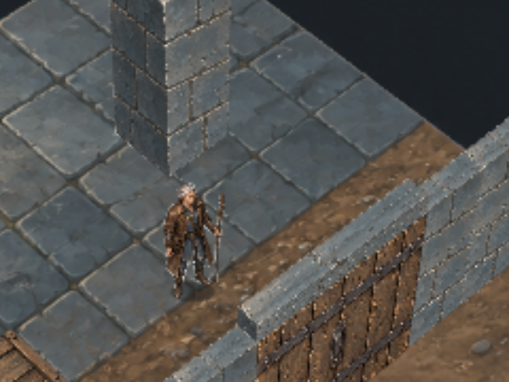
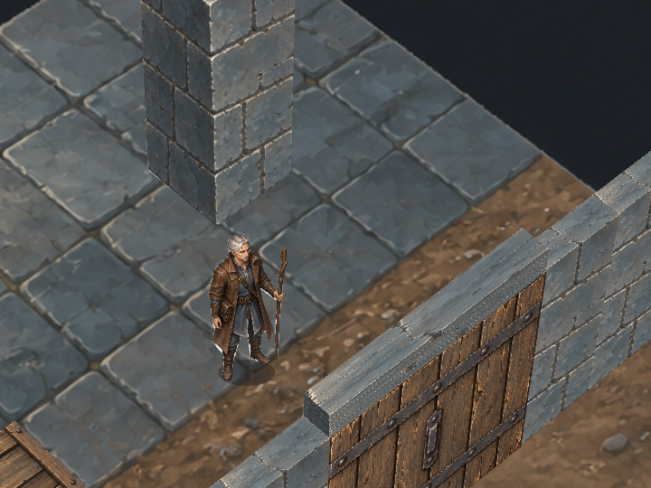
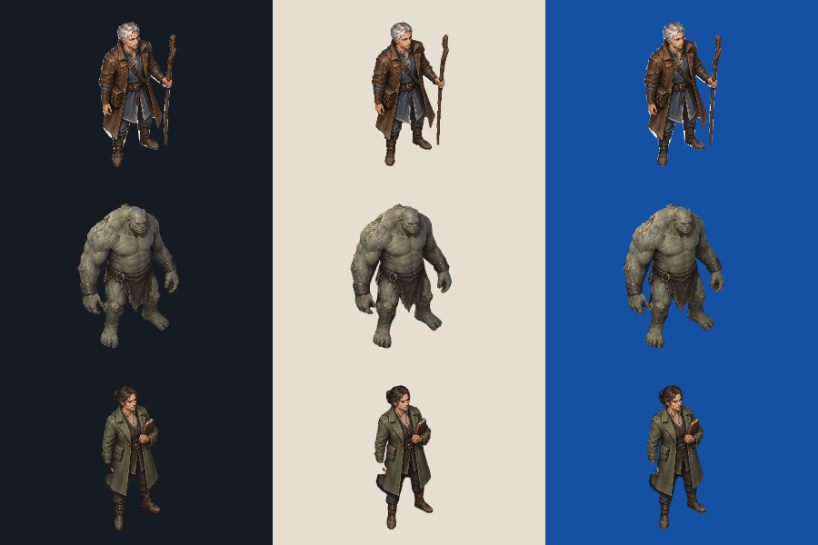
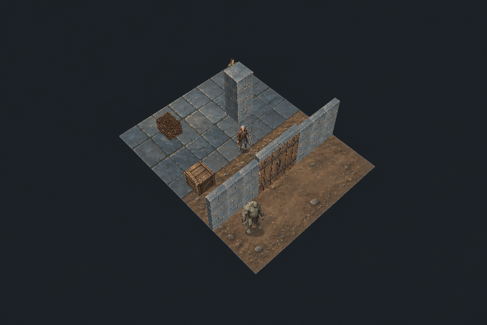

Painted chamber · evidence and unresolved art defects
Godot is the shipping target; Pixi is the test harness. Projection C. The three-regime checkpoint is complete; this chamber test runs in the selected Pixi harness.
Geometry/state checks passed; visual integration is not accepted. Fresh rendering improves actor sharpness, but the floor has a source-resolution ceiling. Current masks retain pale contamination. Shared lighting, structural shadows, material cohesion, walking, modular gear and reusable animated VFX are unqualified.
1. Enlargement versus a fresh render
These crops show exactly the same framing and JSON state. Left: a 240×180 region of the 960×640 capture enlarged 3×. Right: the same region freshly rendered into a 2880×1920 buffer and shown at 1:1. Both displayed images are 720×540 pixels. Scroll horizontally on a narrow display. No sharpening or source-image edits.
A · existing low buffer, smooth 3× enlargement
B · fresh high buffer, 1:1 crop — recommended rendering approach
The mage retains substantially more detail in the fresh render. Nearest neighbor replaces blur with visible pixel blocks. The floor remains softer: its original is only 1536×1024, so the 2880×1920 buffer exceeds its source detail. Fullscreen does not inherently cause blur, but stretching the low buffer would. Final display resolution, 16:9 framing, HUD and performance are not locked.
Full 960×640 capture · Full 2880×1920 fresh capture · Registered controls
2. Pale edges are an unresolved defect
Rows: mage, monster, NPC. Columns: dark, light, saturated blue. Body height is 150 pixels, freshly sampled from each source. The mage's coat has visible pale patches; the NPC mask cuts incorrectly through the pale hand/coat region (source skin, not confirmed white-matte leakage). A mask can correctly exclude its exterior while retaining unwanted background inside its contour. The earlier outside-mask checks do not certify this interior edge quality.

Bright stone edges also include painted bevel/mortar highlights and repeated face texture boundaries. Their exact contribution must be separated from contour contamination. This prototype has baked painted shading and simple actor contact ellipses; it lacks a qualified shared light/shadow response. Increasing resolution does not resolve either problem.
3. Interactive object and movement evidence
Authoritative-event buttons exercise the chamber fixture; they are not a finished proximity interaction UI. Frozen poses move through swept collision. Mechanical gate movement is tested; character gait is not. The gold loot dot is a diagnostic marker.
Locked chamber

Live test (requires the local HTTP server) · Findings and limitations · Raw runtime checks · Four portability constraints
4. Recorded playback
The recording includes accelerated deterministic checks, explicit fixture placements and a final approximately 12-second real-time demonstration. Teleports are test controls. Frame telemetry is observational, not a shipping-performance pass.
Three-regime checkpoint · Continuation entrypoint